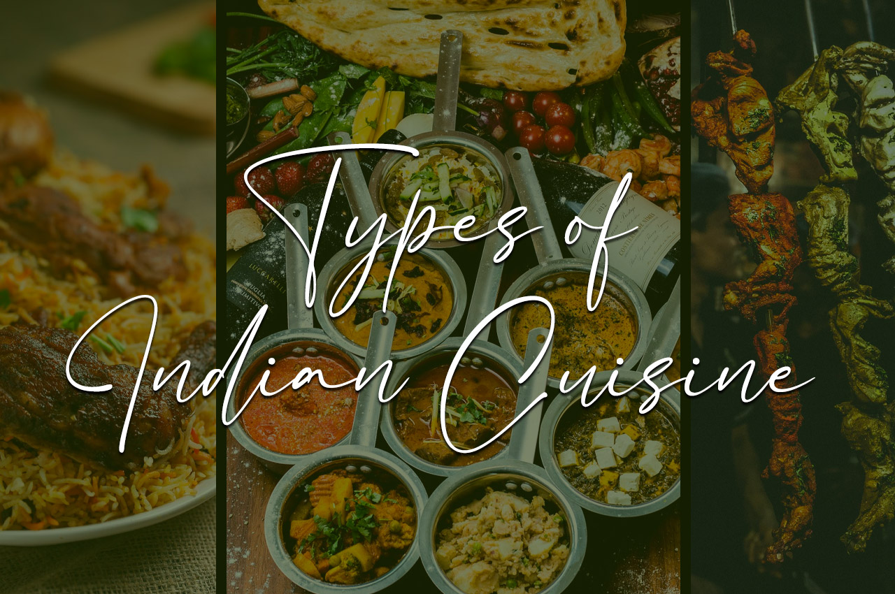
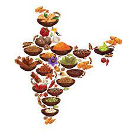
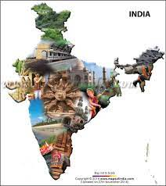

Indian cuisine consists of a variety of regional and traditional cuisines native to India. Given the diversity in soil, climate, culture, ethnic groups, and occupations, these cuisines vary substantially and use locally available spices, herbs, vegetables, and fruits. Indian food is also heavily influenced by religion, in particular Hinduism and Islam, cultural choices and traditions. Historical events such as invasions, trade relations, and colonialism have played a role in introducing certain foods to this country. The Columbian discovery of the New World brought a number of new vegetables and fruit to India. A number of these such as potatoes, tomatoes, chillies, peanuts, and guava have become staples in many regions of India. Indian cuisine has shaped the history of international relations; the spice trade between India and Europe was the primary catalyst for Europe's Age of Discovery. Spices were bought from India and traded around Europe and Asia. Indian cuisine has influenced other cuisines across the world, especially those from Europe (especially Britain), the Middle East, Southern African, East Africa, Southeast Asia, North America, Mauritius, Fiji, Oceania, and the Caribbean.

The culture of India is one of the oldest and unique. In India,
there is amazing cultural diversity throughout the country. The
South, North, and Northeast have their own distinct cultures and
almost every state has carved out its own cultural niche. There is
hardly any culture in the world that is as varied and unique as
India. India is a vast country, having variety of geographical
features and climatic conditions. India is home to some of the most
ancient civilizations, including four major world religions,
Hinduism, Buddhism, Jainism and Sikhism.
A combination of these factors has resulted into an exclusive
culture- Indian culture. Indian culture is a composite mixture of
varying styles and influences. In the matter of cuisine, for
instance, the North and the South are totally different. Festivals
in India are characterized by color, gaiety, enthusiasm, prayers and
rituals. In the realm of music, there are varieties of folk,
popular, pop, and classical music. The classical tradition of music
in India includes the Carnatic and the Hindustani music.
